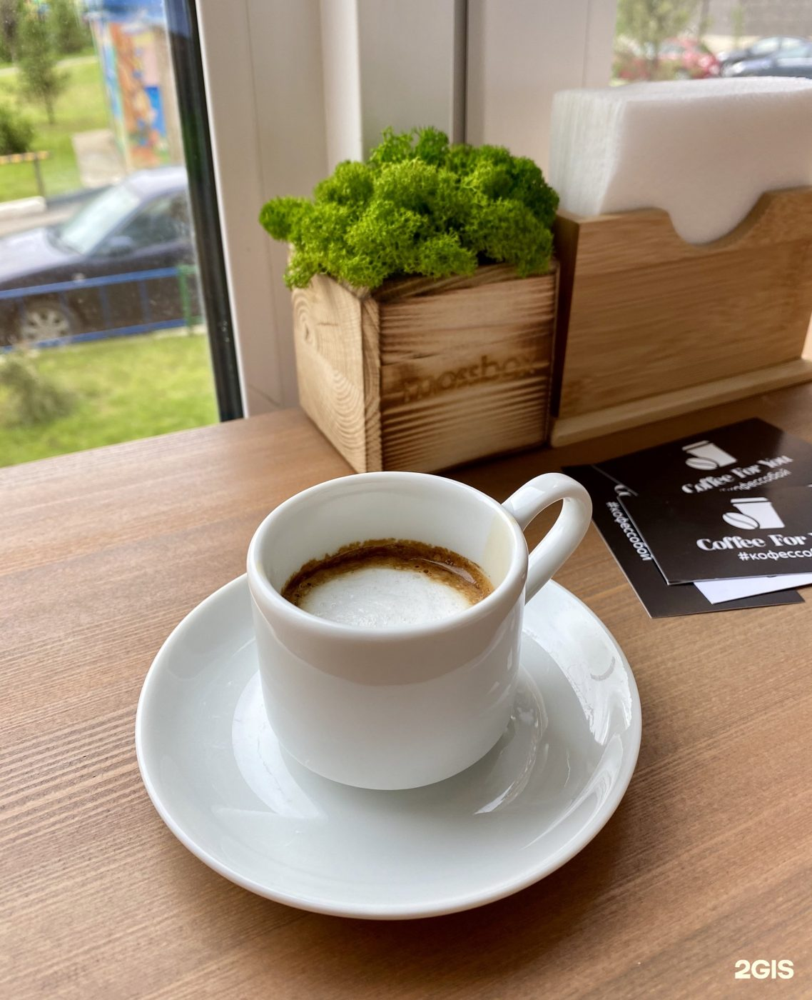

кофейня · Молодёжная ул., 3
Тихая точка на Молодёжной: кофе с собой с 7 утра в будни. Сделайте паузу вместе с кругом.
Как нас найти
ритм дня
Кофе с собой — по данным 2ГИС. Цены и меню уточняйте на месте.
Отзывы · 2ГИС
«очень вкусный кофе, приятное обслуживание и вообще очень уютное заведение ❤️\n\nидеальное место для завтрака вне дома!\nа еще посуда очень красивая)»
«Вкусный кофе и завтраки! Рекомендую сырники и омлет с овощами»
«Приятное место, хорошее обслуживание, вкусный кофе!) спасибо ❤️»
Красногорск, Молодёжная ул., 3, 1 эт.